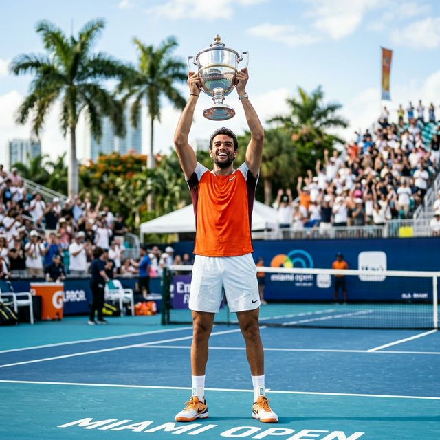
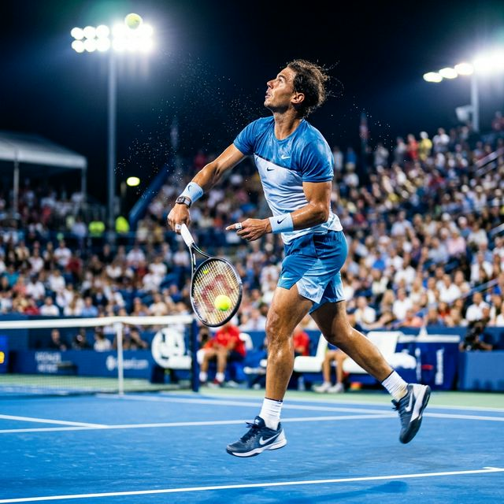
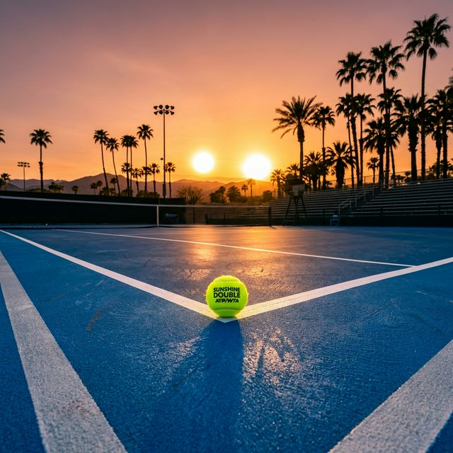

[분석] 세계 2위 야닉 시너, 마이애미 우승과 역사상 8번째 '선샤인 더블' 대기록
카를로스 알카라스(세계 1위)를 맹추격하며 현재 ATP 세계 랭킹 2위로 군림하고 있는 야닉 시너(Jannik Sinner)의 쾌속 질주가 플로리다에서도 이어졌습니다.
한국 시각 2026년 3월 30일 새벽 마이애미 하드록 스타디움에서 열린 '2026 마이애미 오픈' 남자 단식 결승전에서 체코의 이리 레헤츠카(Jiří Lehečka)를
세트 스코어 2-0(6-4, 6-4)으로 제압하며 우승을 차지했습니다. 지난 인디언 웰스 마스터스에서 다닐 메드베데프를 꺾고 우승한 데 이어 이번 마이애미 오픈마저 삼켜버린 야닉 시너. 테니스 역사상
8번째로 작성된 '선샤인 더블(Sunshine Double)' 달성의 진정한 의미와 34연속 세트 승리라는 대기록을 철저한 팩트체크로 분석합니다.

▲ 인디언 웰스에 이어 마이애미 오픈 트로피까지 들어 올리며 ATP 세계 랭킹 2위의 위엄을 과시한 야닉 시너. (ratio 1:1)
1. 극한의 우천 중단을 극복한 1시간 33분의 승리
이번 마이애미 오픈 결승전은 결코 평탄하게 흘러가지 않았습니다. 플로리다 특유의 변덕스러운 비 때문에 경기가 두 차례나 중단(90분, 80분 지연)되며 선수들의 멘탈과 컨디션 조절을 몹시 어렵게
만들었습니다. 하지만 야닉 시너는 폭우 속에서도 흔들림 없는 집중력을 보여주었습니다.
🔥 결승전 핵심 스탯 기반 팩트체크
- 최종 스코어 및 시간: 6-4, 6-4 / 실제 플레이 시간은 1시간 33분이었으나 우천 지연으로 인해 전체 일정은 매우
고단했습니다.
- 멘탈리티: 두 번의 비로 흐름이 끊겼음에도, 경기가 재개될 때마다 오히려 더욱 날카로운 첫 서브(퍼스트 서브)를 꽂아 넣으며 레헤츠카의 추격 의지를
꺾었습니다.
장시간의 대기시간 속에서도 시너는 로봇처럼 일정한 템포를 유지하며 자신의 서브 게임을 단단히 지켜냈고, 결국 1시간 33분의 실플레이 타임 끝에 이변 없이 승리를 확정 지었습니다.

▲ 경기가 두 차례 중단되는 악재 속에서도 시너의 서브 루틴과 파워는 흔들림이 없었습니다. (ratio 1:1)
2. 역사상 8번째 '선샤인 더블', 그리고 34연속 세트 승리의 위업
테니스계의 '선샤인 더블(Sunshine Double)'은 단일 시즌에 미국 캘리포니아의 인디언 웰스와 플로리다의 마이애미 오픈을 연달아 우승하는 것을 뜻합니다. 이동
거리와 기후의 갭이 워낙 커 체력 소모가 극심하기 때문에, ATP 역사상 선샤인 더블을 달성한 남자 선수는 야닉 시너가 역대 단 8번째에 불과합니다.
2026 야닉 시너 선샤인 더블 주요 기록 일지
| 단계명 (2026 투어) |
결승전 파트너 |
주요 기록 요점 |
| 1. 인디언 웰스 우승 |
vs 다닐 메드베데프 |
하드 코트 난적 메드베데프를 꺾고 선샤인 1차전 정복 완료 |
| 2. 마이애미 오픈 우승 |
vs 이리 레헤츠카 |
가장 최근 달성자인 2017년 로저 페더러 이후 최연소 급 달성 |
|
🔥 현재 ATP 마스터스 1000 시리즈 '34연속 세트 승리' 진행 중
|
가장 최근 이 위대한 업적을 달성했던 선수는 2017년의 로저 페더러였습니다(조코비치 역시 이전에 달성한 바 있음). 또한 시너가 이번 우승을 통해 이어가고 있는 가장 무시무시한 기록은 바로 마스터스
1000 등급 이상에서 기록 중인 34연속 세트 승리(세트 무패)입니다. 인디언 웰스 단일 대회가 아닌, 투어 전반에 걸쳐 그가 한 세트도 내주지 않고 연승을 질주하고
있다는 점은 현재 하드 코트에서 그가 보여주는 폼이 얼마나 압도적인지를 대변합니다.

▲ 페더러, 조코비치 등 전설들의 뒤를 이어 남자 테니스 역사상 8번째로 선샤인 더블 클럽에 가입한 야닉 시너. (ratio 1:1)
3. 세계 1위 알카라스를 위협하는 진정한 '라이벌리'의 시작
현재 세계 랭킹 1위는 차세대 흙신 카를로스 알카라스가 차지하고 있습니다. 하지만 이번 마스터스 대회 연전을 통해 세계 랭킹 2위 시너는 랭킹 포인트 격차를 크게 좁혔습니다. 알카라스가 폭발적인 파워와
유연성을 자랑한다면, 시너는 냉정하고 로봇처럼 정교한 베이스라인 타격으로 무장하며 완벽한 대조를 이루고 있습니다.
💡 클레이 코트 시즌 진입: 진정한 승부처
하드 코트 시즌을 자신의 독무대로 만든 시너의 다음 과제는 4월부터 본격적으로 롤랑 가로스를 향해 달리는 클레이 코트(Clay Court) 시즌입니다. 알카라스가 전통의
강점을 보이는 흙바닥에서도 야닉 시너의 연승 기록이 유지될 수 있을지가 올 시즌 전 세계 테니스 팬들의 가장 큰 관전 포인트가 될 것입니다.
두 번이나 쏟아진 폭우도, 체코의 무서운 신성 이리 레헤츠카의 패기도, 역사상 8번째로 선샤인 더블을 향해 걷는 시너의 발걸음을 막지 못했습니다. 2026년을 완벽히 본인의 해로 만들기 위한 예열을
마친 세계 랭킹 2위 야닉 시너. 다가오는 클레이 시즌에서 어떤 드라마를 쓸지 그 행보가 주목됩니다. 🎾
데이터 출처: 2026 ATP Tour 공식 마이애미 오픈 매치 리포트 및 역대 마스터스 기록 검증
#야닉시너
#마이애미오픈우승
#선샤인더블
#역대8번째진입
#34연속세트승리
#세계랭킹2위
#페더러이후대기록
#다닐메드베데프
#이리레헤츠카
#ATP투어분석